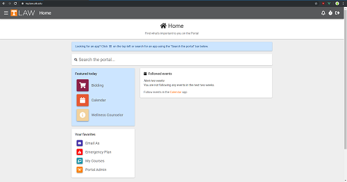
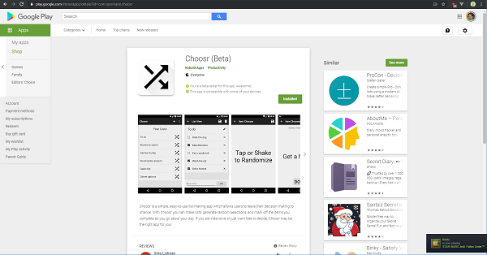

<!DOCTYPE html>
<html lang="en">
<head>
    <meta charset="UTF-8">
    <title>Nick Romano</title>
    <link rel="stylesheet" type="text/css" href="styles/main.css">
    <meta name="viewport" content="width=device-width, initial-scale=1.0">
</head>
<body>
<footer class="container">
    <div class="contact-floater">
        <form>
            <label><b>Contact</b></label>
            <input type="text" placeholder="Name">
            <input type="text" placeholder="Email">
            <textarea placeholder="What can I make for you?"></textarea>
            <button type="submit">Submit</button>
        </form>
    </div>
    
    <h1>Nick Romano</h1>
    <h2>I solve problems and make things.<br>Usually at the same time.</h2>
    <p>Cutting to the chase &mdash; I am a programmer always looking for work.<br>I write C#, Javascript, Kotlin, and Java. I use ASP.NET, Node.js, Vue, and Android.<br>I approach problems from a perspective of consistency and reliability, but also err on the side of simply doing something cool.</p>
    <div class="link-legs">
        <div>
            <h2>Projects</h2>
            <ul>
                <li>myUTLaw</li>
                <li>MobTracker</li>
                <li>AlterLog</li>
                <li>Goonie Guild Chat</li>
                <li>Grade Math</li>
                <li>Choosr</li>
                <li>Freelance Websites</li>
            </ul>
        </div>
        <div>
            <h2>Links</h2>
            <ul>
                <li>Github</li>
                <li>LinkedIn</li>
            </ul>
        </div>
    </div>

    <h1>Projects</h1>
    <h2>myUTLaw</h2>
    
    <p>myUTLaw is a web portal for the University of Tennessee College of Law. It provides hundreds of student, staff, and faculty with a platform to share information throughout the college.</p>
    <p>With the help of a small IT team, we rewrote it in ASP.NET MVC 5, WebApi 2, Vue.js, and Node.js with Webpack. I am actively developing it. More information can be found on our <a href="https://utlawdevs.wordpress.com/">developer blog</a>.
    <h3>Technologies</h3>
    <ul>
        <li>ASP.NET MVC 5, WebApi 2</li>
        <li>Vue.js</li>
        <li>Node.js</li>
        <li>Webpack</li>
    </ul>
    <h3>Status</h3>
    <p>In production</p>
    <hr>

    <h2>MobTracker</h2>
    
    <p>MobTracker is a combat tracking web app designed for tabletop roleplaying games, specifically D&D 5th Edition. A game master can use it to track in-game combat data, much like a spreadsheet, but with many quality of life improvements.</p>
    <h3>Technologies</h3>
    <ul>
        <li>Vue.js</li>
        <li>Node.js</li>
    </ul>
    <h3>Status</h3>
    <p>I am currently developing a way to efficiently create snapshots of data so that users can "undo" and "redo" their actions. I call it <a href="https://github.com/njromano/keep-js">keep-is</a></p>.
    <hr>

    <h2>AlterLog</h2>
    
    <p>AlterLog is a mood-tracking web app focused on people with dissociative disorders. A user can track their mood states throughout their lives, and the app will provide users with insights into themselves and their thought patterns</p>
    <h3>Technologies</h3>
    <ul>
        <li>Vue.js</li>
        <li>Node.js</li>
    </ul>
    <h3>Status</h3>
    <p>Backburner</p>
    <hr>

    <h2>Goonie Guild Chat</h2>
    
    <p>Goonie Guild Chat is a World of Warcraft addon developed for &lt;GOON SQUAD&gt;. It simply repeats the phrase "G💀💀NS" if someone says "G💀💀NS"' in guild chat.</p>
    <h3>Technologies</h3>
    <ul>
        <li>LUA</li>
    </ul>
    <hr>

    <h2>Grade Math</h2>
    
    <p>Grade Math is a simple npm package I made while creating a grading application for UT Law. It provides basic statistics functions like standard deviation and z-values.</p>
    <h3>Technologies</h3>
    <ul>
        <li>Javascript</li>
        <li>Node.js</li>
        <li>Lodash</li>
    </ul>
    <hr>

    <h2>Choosr</h2>
    
    <p>Choosr is an Android application written as an introduction to the OS during my education. It lets users make lists and select from them randomly by shaking the phone.</p>
    <h3>Technologies</h3>
    <ul>
        <li>Java</li>
        <li>Android</li>
    </ul>
    <hr>

    <h2>Freelance Websites</h2>
    
    <p>I have also created commercial websites for the following companies</p>
    <ul>
        <li>Marine Tower Systems</li>
    </ul>
    <hr>

    <footer>
        &copy; <script>document.write(new Date().getFullYear())</script> Nick Romano
    </footer>
</div>
</body>
</html>
